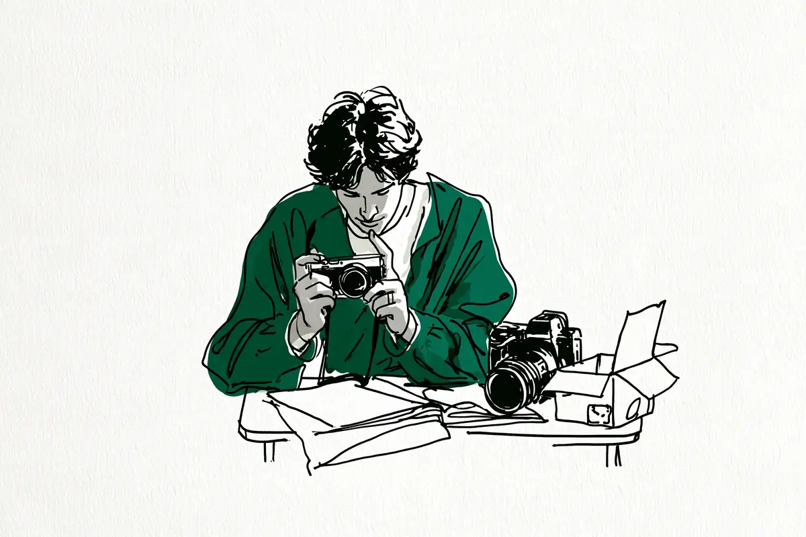

この記事には広告(アフィリエイトリンク)が含まれます。
現在地: 買う前に迷ってる
α6400の後悔・デメリット、買った人の不満と手放した理由

α6400を自分で買った・使っていると書いた105人のうち、本人が「後悔」と書いたのは2人でした。1人は本体に手ブレ補正がないため、動画用に上位機のα6700にすべきだったかと書いた人(写真には不満なし)。もう1人はレンズキットで買ったことを悔やんだ人です。実際に手放した・別の機種に替えた人は27人で、行き先は4通りに分かれました。「手放した」「買い替え」「乗り換え」「さよなら」などの語でも探したので、替えた人の記事が見つかりやすい集め方です。105人のうち何人が手放すか、という割合としては読めません。
α6400(a6400、型番ILCE-6400)はソニーのミラーレス(センサー=光を受け止める板が見た映像を、画面やのぞき窓で見るタイプのカメラ。言葉の意味)で、2019年2月に発売された機種です。私はカメラを持っていないので、note・個人ブログ70人と知恵袋35人の声を集めて整理する側で、買う・買わないはすすめません。
- まだ買う前で、後悔しないか知りたい → 早見表、手ブレ補正の節、手放した・替えた人
- 買ったばかりで、不満が出てきた → レンズキットの節、バッテリー・操作・重さ、公式の数字
- 使っていて物足りなくなった → 手放すか迷っている人と手放した・替えた人
α6400の口コミ早見表: 不満・満足の種類、人数、その人がどうしたか
105人が書いていた不満と良い点を、本体・レンズ・撮る側のどれも同じ細かさ(1つの話題=1行)で分けました。私の読み方で、1人が2つ以上に入り、行の分け方で順位は変わります。右の列は、その種類を書いた人がそのあとどうしたかの例で、1人ずつの話です。
| 種類(私の読み方) | 書いた人数 | その人がどうしたか(例) |
|---|---|---|
| 本体に手ブレ補正がない(写真・動画とも) | 20人(うち動画の話は12人) | 動画で揺れる、ジンバルは大げさ → あと2年ほど使い続けると決めた |
| 暗い場所・高感度のノイズ(室内・夜・ショー) | 16人 | ISO6400で写真がガサガサ → 本体とレンズを売ってα7C IIへ |
| フルサイズへの憧れ・APS-Cの限界(ボケ・画質) | 16人 | 満足していたが、センサーの大きさだけが引っかかった → 手放してα7C IIを注文 |
| キットのレンズ(写り・ボケない・寄れない・望遠不足・ピントの甘さ) | 15人 | 望遠側のピントの甘さが気になる → キットの2本を売って望遠を足すか相談 |
| バッテリー | 10人 | 持ちの悪さと、本体の手ブレ補正への期待 → 中古のα6600へ |
| 重い・大きい・かさばる・持ち出さなくなった | 7人 | レンズ込み668gが重い → 持ち出さなくなり、手放した |
| 操作・メニュー・動作(もっさり・設定が分かりにくい・ダイヤル・タッチ非対応) | 6人 | 前ダイヤルがなく、メニューがタッチ非対応 → α6700へ |
| 撮れる写真が思ったのと違う・上達しない・感動がない | 5人 | 16万円のレンズを買ってもしっくりこなかった → 富士フイルムへ |
| 動画のその他(色・録画中の表示・画面の向きなど) | 5人 | 肌や白飛びの色が気になった → FX30へ |
| 端子(マイクロUSB)・ピント合わせ・グリップ・液晶・色・故障や落下・転送 | 2〜3人ずつ | グリップが浅く、望遠で右手がつらい → 使い続けている |
| 良い点: 軽い・小さい | 27人 | 軽さを決め手に新品を買った → 4年後、フルサイズの資金に |
| 良い点: ピント合わせが速い・正確 | 19人 | 子どもが動き回っても撮れる → 2年以上、子育て用に |
暗い場所のノイズとフルサイズへの憧れは、どちらかを書いた人が27人で、5人が両方を書いています。「後悔」と書いたKooocamさんは、1行目の手ブレ補正(動画)の行です。
105人の結果を、購入リンクの有無で分けて数えると、こうなります。購入リンクの有無は、記事の本文にAmazon・楽天などの商品リンクやアフィリエイトの表記があるかを、保存したページで機械的に確かめました。自分のサイトに広告の表記がある人も含めています。
| 結果(私の読み方) | 人数 | うち購入リンクのないサイトの書き手 |
|---|---|---|
| 満足 | 22人 | 10人 |
| 満足と不満の両方を書いて使い続けている | 9人 | 6人 |
| 本体は続け、不満をレンズの追加で解決しようとしている | 10人 | 9人 |
| キットで買ったことを後悔と書いた(本体は使用中) | 1人 | 0人 |
| α6400を残して、別の機種を足した | 4人 | 3人 |
| 別の機種に替えた(手放し済み・資金にする途中を含む) | 19人 | 12人 |
| 手放した(使わなくなった・合わなかった・理由なし) | 8人 | 7人 |
| 買い替え・手放しを迷っている | 17人 | 17人 |
| 困りごとだけで、評価はない | 1人 | 1人 |
| 買った直後で、評価はまだ | 14人 | 7人 |
迷っている17人は全員が知恵袋の質問者です。知恵袋は困ったときに質問する場なので、迷っている段階の声が集まり、その後どうしたかは書かれていません。集め方と偏りは数え方と偏りにあります。
α6400で「後悔」と書いた2人(動画の手ブレ補正、レンズキット)と、使わなくなって手放した人
本人が「後悔」という言葉を自分のことに使ったのは2人です。本体の色をシルバーにしたことを後悔と書いた人が別に1人いますが、性能や使い勝手の話ではないので、ここでは数えません。
2026年のKooocamさん(カメラの紹介もしているサイトです)は、子どもと旅の動画のために買って2か月で、レンズを4本そろえました。写真についてはこう書いています。
特に写真を撮るという点においては、不満なんて一つもありません。
後悔は動画のほうで、本体の話です。α6400の本体には手ブレ補正(カメラの揺れを打ち消す仕組み。言葉の意味)がないので、歩きながら撮ると揺れます。ジンバル(カメラの揺れを打ち消す持ち手)は大げさに感じた、という流れで、こう続きます。
強力な手ぶれ補正を持つ上位機種、APS-Cなら「α6700」を買うべきだったのか…という後悔が頭をよぎります。
結論は、あと2年ほど使い続ける、でした。そろえた4本のレンズがすべてAPS-C用なので、フルサイズに移るとレンズも買い直しになる、という計算も添えています。
もう1人のぽてもちさん(カメラの紹介もしているサイトです)の後悔は、店員の話を信じてパワーズームレンズキットで買ったことです(2022年)。本体は使っています(レンズキットの節)。
このサイトでは、後悔・使わなくなった・無駄だった、のどれかを本人が書いていれば後悔の側として数えています。「後悔」の語を使わずに、使わなくなって手放した人が4人、それに近い人が3人。該当する人は次の節で行き先ごとに書きます。
α6400を手放した・替えた27人: 行き先と理由を、人ごとに
別の機種に替えた19人と、次の機種を書かずに手放した8人の、合わせて27人です。うち8人は購入リンクのあるサイトの書き手で、知恵袋の人は4人。27人のうち6人は、α6400に満足していた・不満はなかったと書いたうえで替えています。行き先で4つに分けました。
フルサイズへ移った12人: 暗い場所のノイズ、ボケ、憧れ
α7C IIが4人、α7 IIIが2人、α7Cが2人、α7 IVが1人、機種を書いていない人が3人。理由は、暗い場所のノイズ、ボケ、フルサイズへの憧れです。
2024年のぼすかるさんは、はじめてのカメラとして買い、スナップと人物を2年撮りました。本体には満足していて、引っかかったのはセンサーがAPS-Cであることだけ、という書き方です。
というわけで、α6400を手放し、α7Ciiを注文しました。
2026年のtimutimuさんは家族を2年撮り、暗い場所の限界と、一度はフルサイズを使ってみたい好奇心でα7C IIに替えました。
α6400ではISO6400でも写真がガサガサになっていた。
ISO(センサーが受け取った光の信号をどれだけ大きくするかの目盛り。言葉の意味)を上げると出るザラザラの話です。本体とレンズを売った分を差し引けば手が届く値段だった、とも書いています。
2026年のにーちさんは、大学2年の手前にお年玉貯金で新品を買い、4年使いました。使いやすく、今でも人にすすめられる機種だと書いたうえで、こうなりました。
でも、そんなフルサイズの誘惑に負けてしまい、僕のα6400はフルサイズの資金になりました。
4年使ったちひろさんも、2025年にフルサイズの資金にするために手放し、次の機種は迷っている最中でした。ほかの人は、こうでした。
- えびさん: ダブルズームキットから約8か月でα7C IIへ。夜でもきれいに、もっと大きくぼかしたい(2026年、記事)
- やまてつさん(カメラの紹介もしているサイトです): 室内で自撮りするレビュー動画のために、α7C IIへ。ISOを上げるとノイズだらけになる(2025年、記事)
- トバログさん(カメラの紹介もしているサイトです): カメラのブロガーで、α7 IIからα6400へ移り、半年でα7 IIIへ。不満はほぼないとしたうえで、手ブレ補正・暗がりの高感度・端子の3点(2020年、記事)
- Shuheyさん(カメラの紹介もしているサイトです): 中古のα7 IIIへ。周りのフルサイズユーザーと、生まれてくる子どもの写真(2025年、記事)
- 旅カメラblogさん(カメラの紹介もしているサイトです): 約1年半でα7 IVへ。手ブレ補正・暗い場所のノイズ・憧れ(2020年公開・2026年書き直し。手ブレ補正の節)
- 知恵袋の質問者2人: ISOが上がると汚かったのでα7Cへ替え、望遠が足りず切り抜いて撮っている人(2023年)と、人物のノイズの差でα7Cへ替えた人(2022年)
- 機種を書いていない3人: ちひろさん、にーちさん、子どもを撮るために最初にα6400を買って結局フルサイズへ移ったと答えた知恵袋の回答者(2025年)
α6700・α6600へ移った5人: 手ブレ補正、操作、バッテリー
α6700が4人、α6600が1人です。2025年のtunatankさんは動画を撮る人で、画質は大差ないが機能が洗練されていて差額の価値はある、という結論でした。
手ブレ補正の有無が思ったよりもでかい。
経験者の理由は、本体の性能よりも周りの機材との組み合わせでした。業務用の動画機も持つカズンさん(カメラの紹介もしているサイトです)の、2025年の記事です。
一番の悩みは、バッテリーがすべて異なり電源管理が面倒なこと。
カメラ歴15年で元量販店カメラ担当のNEKOさん(カメラの紹介もしているサイトです)は、2025年公開・2026年更新の記事です。前ダイヤルがないこと、メニューがタッチ非対応なことが不便で、α6700はそこを直してくれた、と。バイト代をためて中古のα6400を買ったイソフルランさんは、不満はなくライブ撮影に備えてα6700へ移った人です。2022年に中古のα6600に替えた人(カメラの紹介もしているサイトです)の理由は2つ。バッテリーの持ちと、本体に手ブレ補正があれば今後のレンズで狙いどおりに撮れる割合が上がるかもしれない、という期待です。替えてみると両機の違いは僅か、とありました。
替えたあとの感想が逆向きの人もいます。2026年のNero_hiroさん(カメラの紹介もしているサイトです)は、子どもの発表会や舞台を年に数回撮る人です。ピントの外れ・高感度のノイズ・操作の手間でα6700を買いました。替えてみると写真の仕上がりに大きな差を感じなかった、と書き、こう続けます。
うーん、もう少し頑張ってフルサイズのα7C2にすれば良かったか？
裏を返せばα6400は値段のわりに良い、とも書いていて、α6400を手放すかは悩み中です。まだ手元にあるので、この記事では「別の機種を足した」側に数え、手放した・替えた人には入れていません。
他社の機種・小型機・動画機へ移った4人: 色の好み、持ち歩き、動画
富士フイルムが2人、コンデジ(レンズを交換できない小型のカメラ)が1人、動画用の機種が1人。
2025年のMAIさんは、前年の7月に初めてのミラーレスとして買い、1年たたずに売りました。上達しないのは自分のせいだと書きつつ、富士フイルムの色が好みだと気づいてX-T50を買い、α6400は防湿庫で眠らせていました。
最終的には16万するレンズを買っても、これじゃないんだよ感が続いた。
2025年の柊木志音さんは、自分のお金で初めて買ったカメラがα6400でした。大学院の海外学会の前に買い、キットのズームが大きくて鞄に場所を取る、思った写真にならない、で2回しまい込みます。撮るのは夫のGR IIIとiPhoneになりました。
結局最後までα6400とは仲良くなれないまま帰国し、そのまま奥に片付けてしまいます。
3回目の挑戦のあと富士フイルムのX-E5を買い、α6400は人に譲りました。ましまろさんは1年使って良い機種だと結論したうえで、中古のコンデジRX100M5Aに替えています(2022年公開・2026年更新)。
しかし何故手放すかと言うと持ち運ぶペースが落ちたのと手振れ補正がほしい！
子どもの動画を撮るMandLさんは、2023年に2年の分割払いを終えてFX30に替えました。理由は動く子どもの動画(本体に手ブレ補正がなく、ジンバルは子連れにはハードル)と、肌や白飛びの色。写真には大きな不満がなく、写真を撮る体験はα6400のほうが良かった、とも。
使わなくなった・合わなかったで手放した6人
使わなくなったと書いた人が2人、合わなかったと書いた人が2人、理由を書いていない人が2人です。
2025年のるいとーさん(カメラの紹介もしているサイトです)は、最初の1台としてα6400と、手ブレ補正のないSIGMA 30mm F1.4を選びました。想像より大きく重い(レンズ込み668g)、本体に手ブレ補正がない、レンズ選びの失敗、と続きます。追加のレンズか本体の買い替えかで迷ってストレスになり、持ち出さなくなりました。本人の言葉は失敗・定着しなかった、です。
でも実際に使ってみた結果、どうしても自分の中で定着せず、手放すことになってしまいました。
2026年のadamsさんは釣りの動画をYouTubeに出す人で、2023年10月に入手しました。動画の編集の幅が狭くα7C IIを買い、α6400はレンズのために持ち続けました。
それでも圧倒的に使わなくなってしまった。
悪くないカメラだったと振り返って、α7C IIと一緒に売っています。2026年のたかはしなおみさんは、キヤノンを20年使った人の2台目で、最初の1台ではありません。量販店の商談会で比べずに買い、動画の手ブレ、屋外で液晶が見にくい、Macに無線で転送できない、で決めました。
しかし今回は、15日に購入して、19日にはもう要らない！と思い、手放すことを決意したのだ。
ソニーが悪いのではない、と添えています。PENTAX K-1をメインにするPhoto-Narrateさんは、2022年に愛犬用に買って半年で手放しました。撮って出しの写りと、撮っても感動がないことが理由で、自分に合わなかっただけ、という書き方です。理由を書いていない人は2人。ニコンD850のサブにしていたPonta_Photoさん(2026年)と、手放してから再開の相談をしている知恵袋の質問者(2024年)です。
手放す前に、売るといくらになるかを無料で知る方法は売るなら、まず無料で相場を知るに書きました。
α6400の暗い場所のノイズと動画の手ブレ: 手放すか迷っている17人
知恵袋で買い替えや手放しを相談していた17人の理由は、こう分かれました。
- 暗い場所のノイズ: 7人
- 動画の手ブレ: 3人(手ブレ補正の節に例)
- バッテリーと手ブレ補正: 2人
- ピント合わせの初動と起動の遅さ、物足りなさ、写りの好み、落として売れるか、理由なし: 1人ずつ
暗い場所・高感度のノイズを書いた人は16人、フルサイズへの憧れやAPS-Cの限界を書いた人も16人で、5人が両方を書いています。替えた人の声は上の節にあるので、ここでは迷っている人と、残した人の声です。
現在はa6400を使用しておりますが、暗所でのノイズがでやすいためフルサイズ機が欲しくなっています。
子ども・星空・風景を撮る人で、α6400を手放してα7 IVを買うのが選択肢の1つ目でした。2023年のズームレンズキットを1年使った質問者は、ディズニーの暗いところで望遠を使うとISOが高くなり、ザラつきがiPhone以下に感じる、と。予算でフルサイズをあきらめた経緯があり、α7C IIか、レンズを良いものにするかで迷っています。2021年の2人は、こうでした。
- 300mm・ISO8000でノイズだらけと書いた質問者: EOS RPを検討
- 荷物の多さと薄暗い室内を理由に挙げた質問者: 手放してiPhone 13にするか相談
ISOを上げたときのザラザラ(高感度ノイズ。言葉の意味)は、一般にセンサーが大きいほど有利とされますが、世代や画像処理で差は変わります。自分の写真で手ブレ・被写体ブレ・ノイズを見分ける手順は暗い場所の記事に書きました。
残した人もいます。結婚式と夫を撮るnecorobiさんは、昼間はAPS-Cでも大満足だが、結婚式や暗い場所のノイズが気になる人です。2025年にα7C IIを足し、α6400は気軽なカメラとして残しました。2026年のオールドレンズを使う知恵袋の質問者は、α6400をメインとして残したまま初代α7かα7 IIを足したい人です。理由は暗所ではなく、オールドレンズの写る範囲でした。
α6400のデメリット「本体に手ブレ補正がない」: 動画の人と写真の人で違った
ソニーの仕様表では、α6400の手ブレ補正は交換レンズ側対応(レンズ仕様による)で、本体には手ブレ補正がありません(公式の数字)。これを不満や注意点に書いた20人のうち、動画の手ブレとして書いた人は12人です。写真の人で、手ブレ補正のないレンズを使っていたと分かるのは2人で、ほかの人はレンズを書いていません。
動画の12人。 Kooocamさん、tunatankさん、ましまろさん、MandLさん、たかはしなおみさんは上に書きました。知恵袋の3人は、こうでした。
- 子どもが生まれ、手持ちで動画を撮ったら手ブレが目立った質問者(2024年)
- 写真の性能には不満がなく、動画のために手ブレ補正付きの機種を検討する質問者(2025年)
- GH5の動画の手ブレ補正に魅力を感じ、一式売るか迷う質問者(2024年)
旅の写真で満足している2025年の吉之助さん(カメラの紹介もしているサイトです)は、こう書き分けています。
静止画中心なら問題ありませんが、動画を多く撮る人には少し不便。
写真で手ブレを書いた人。 キットの3本のレンズ(16-50mm・55-210mm・18-135mm)は、どれもレンズ側に手ブレ補正(OSS)が付いています。補正のないレンズと分かる2人は、るいとーさんのSIGMA 30mm F1.4と、旅カメラblogさんのSIGMA 16mm F1.4です。後者は、夜や室内でシャッター速度が遅くなる場面で気になった、と。トバログさんの言い方は、こうです。
α6400 には手ブレ補正が備わっていないため、手持ち撮影だとかなりブレる。
どのレンズでの話かは、この記事には書かれていません。暗い場所でシャッターが遅くなる仕組みはオートなのにブレるのはなぜ?に分けて書きました。
写真だけなら問題ない、と書いた人。 2019年、α6000から替えて子どもを撮る理系パパさん(カメラの紹介もしているサイトです)は、1か月使った時点でこう書きました。
一か月以上使ってきて、注意点は「手振れ補正はレンズ依存である」、正直これくらいだ。
ドライブと風景を撮るAtenza_さんは、気になる点に本体の手ブレ補正なしを挙げつつ、日中の撮影では不満をほとんど感じない、と(2026年)。中古で買った経験者の恭さん(カメラの紹介もしているサイトです)は、心配していた手ブレは昼間の明るい場所では問題ない、と(2024年)。α6600も持つ経験者のじーあーるえす184さん(カメラの紹介もしているサイトです)の2021年の見方は、こうです。両機の大きな違いは手ブレ補正とバッテリーくらいで、補正のあるレンズを使うならα6400で十分。α1などを使う上級者のかめんさんは、2026年にあえてα6400を迎えた人です。本体に手ブレ補正が付いていないことを、優先した条件として挙げています。これは上級者1人の考え方で、買う前の人に向けた話ではありません。
手ブレ補正が強力、と書いた人が2人いますが、本体の仕様から見て効いているのはレンズ側の補正です。camellの会員の方はダブルズームキットで、たかはしなおみさんは手ブレ補正をオンにした設定の話として書いています。
α6400のレンズキット: キットで後悔した人、レンズを足した人、足りた人
買い方が分かる人の内訳です。
- ダブルズームキット(本体に、広い範囲を写す標準ズームと、遠くを大きく写す望遠ズームの2本が付いたセット): 19人以上
- パワーズームレンズキット(標準ズーム1本): 4人
- 高倍率ズームキット(18-135mm 1本): 3人
- 本体と別のレンズを組み合わせた人: 21人以上
キットのレンズに不満を書いた人は15人で、うち知恵袋が11人。その11人のうち9人は、本体は続けてレンズを足す側です。不満は、望遠が足りない、寄れない、ピントの甘さ、写り、ボケない、の5つに分かれます。
キットで買ったことを後悔した人。 ぽてもちさんの後悔は、買い方そのものでした(2022年)。スマホとの違いが分かりにくかった、という理由です。
今として思えば、レンズキットを購入せずに、ボディだけを購入しておけばよかったと思っています。
レンズを足した人。 2024年、ダブルズームと35mmの単焦点(写る範囲が決まったレンズ。言葉の意味)を使う質問者は、キットの2本を売って望遠を足すか相談していました。
普段はレンズキットの望遠レンズを使うことが一番多いのですが、ピン甘がとっても気になります。。
野球観戦のために買った質問者は、バックネット裏から付属のレンズでは寄れず苦戦(2024年)。飛行機を撮る質問者は、50〜210mmを使っていて70〜350mmを買おうと考えています(2026年)。2023年、子どもを撮る質問者は、単焦点の35mmと50mmを主に使い、キットの2本はほぼ使っていない、と。
2024年、ダブルズームで3年使ったデカさん(カメラの紹介もしているサイトです)は、キットの2本からレンズを3本足した人です。
これらの入門レンズの写りは値段相応なので、私はすぐに限界を感じてより高画質なGレンズに乗り換えました。
Gレンズは、ソニーの上位のレンズの呼び名です。子どもを撮るゆさん(カメラの紹介もしているサイトです)は、付いてきたレンズでは思ったよりボケず、購入3日後に中古の単焦点を足しました(2026年)。ボケの量はF値(光の通り道の広さを表す数字)だけでなく、焦点距離(写す範囲の広さを決める数字)や距離でも変わります。
キットで足りている人。 犬を撮るkatsuoさんは高倍率ズームキットで、買って良かった、と(2020年)。EOS 60Dから高倍率ズームキットに替えたケチャップマヨネーズさん(カメラの紹介もしているサイトです)も、3か月の時点で買ってよかった側です(2020年)。
キットの中身は年で違います。現行のダブルズームレンズキット(ILCE-6400X)に付く標準ズームはE PZ 16-50mm F3.5-5.6 OSS IIです(公式の数字)。以前のキットは生産完了なので、2019〜2023年の声にある16-50mmは、以前のレンズの話の可能性があります。
α6400のそのほかのデメリット: バッテリー・操作・端子・重さ
バッテリー。 10人が書いていました。2021年、動画目的のガジェパさん(カメラの紹介もしているサイトです)の7か月の数字です。
4時間くらい撮り続けてると20％切るくらいにはバッテリー持ち悪いです(汗)
ぼすかるさんは電源を入れっぱなしだと数時間で切れる、と。ふぉとがじぇさん(カメラの紹介もしているサイトです)は動画だと2時間も撮れないと思う、吉之助さんは動画なら純正1本で1日は厳しい、と書いています。どれも本人の撮り方での数字です。
操作・メニュー・動作。 6人。ぼすかるさんは全体に動作が鈍い、ガジェパさんは設定画面が分かりにくい、はしかんさん(カメラの紹介もしているサイトです)は設定が多くてとっつきにくい、と。はしかんさんは、録画中の表示が小さな赤いRECだけなので、息子の誕生日の場面が撮れていなかったことがある、とも(2020年)。NEKOさんの前ダイヤルとタッチ非対応は上に書きました。
端子。 マイクロUSBでType-Cではないことを、ガジェパさん・トバログさん・イソフルランさんの3人が挙げました。
重さ・大きさ。 7人が書いていました。るいとーさんの数字です。
668gの重さをどう捉えるかは人それぞれですが、私にとっては重いと感じてしまう重量です。
本体約403g(公式、バッテリーとカード込み)にレンズ265g(本人の記述)を足した数字です。ほかの6人は、こうでした。
- 思ったより重い: ゆさん
- 重さを差し引いても楽しい: 文野巡さん(カメラの紹介もしているサイトです)
- 鞄に場所を取る: 柊木志音さん
- 旅行でかさばる: Nero_hiroさん
- 持ち運ぶペースが落ちた: ましまろさん
- 旅行の荷物が多い: 知恵袋の質問者
反対に、軽さや小ささを良い点や決め手に書いた人は27人います。NEX-3から替えたsunsun_fineさん(カメラの紹介もしているサイトです)は、箱から出した最初の印象が「小さっ！」(2019年)。バイク旅のゆに昆布さん(カメラの紹介もしているサイトです)は「小さいは正義。」でした(2019年)。
グリップ・液晶・色・故障。 グリップが浅いと書いたのは2人で、どちらも手放していません。鉄道を撮るまにさん(2021年)と、経験者のKe-Kunさん(カメラの紹介もしているサイトです、2019年)です。液晶は、画質が良いとは言えない(しぇりさん、2025年)と、屋外で見にくい(たかはしなおみさん)の2人。色はPhoto-Narrateさん(撮って出し)とMandLさん(肌と白飛び)の2人で、色の評判を伝聞の形で書いた人は数えていません。本体の故障や初期不良の体験談は見つかりませんでした。キットの標準レンズが壊れた質問者と、落として売る前の査定を心配する質問者が1人ずつです。
満足した人の声: 軽さ、子育て、長く使う
満足と読んだ22人のうち、購入リンクのないサイトの書き手は10人です。買って数日から数週間の人も含みます。子ども2人を撮るYuituさんは、発売から約5年後に新品のレンズキットを買う前、今さら買って後悔しないかと不安だった人です。2年以上使った結論は、こうでした。
子育て用の最初の一台として、α6400は2026年でも十分使えます。
友人のα7 IIを触って、発売直後に本体とSIGMAの30mmを買った井上こころさんは、決め手はかっこよさでした(2025年)。
それでも全く後悔はしておらず、今現在も愛する機材の一つである。
ステージと野鳥を撮るしぇりさんは、バッテリーと液晶を短所に挙げたうえで、それを上回る良さがある、と(2025年)。2026年には、花火がきれいに撮れて楽しいだーめんさんと、出番が減ったが手放すことのない相棒だといういのりさん。知恵袋では、コンパクトに持ち運びたくてα6400に決め、今は不便がない質問者が1人です。購入リンクのあるサイトの満足側は12人で、1か月で撮ることが楽しいと書いた人から、発売日に買って使い込んだカメラブロガーまでいます(読んだ一覧)。3年使ったデカさんは、α7Cに憧れつつ、価格や大きさを考えると今の自分にはα6400が合う、という結論でした。
α6400の公式の数字: 質量・撮影可能枚数・手ブレ補正・現行のキット(2026年10月時点)
声に出た不満を、ソニーの公式ページの数字と並べました。α6400の仕様ページ・製品ページ・発表時のプレスリリースから、2026年10月17日に取得した値です。
| 項目 | 公式の記載(2026年10月17日取得) | 声との関係 |
|---|---|---|
| 発売 | 2019年1月16日発表、本体は2月22日発売 | 声は2019〜2026年 |
| 質量 | 約403g(バッテリーとメモリカード込み)。本体のみ約359g | 668gはレンズ込みの本人の数字 |
| 撮影可能枚数(CIPA規格) | ファインダー使用時 約360枚/液晶モニター使用時 約410枚 | 本人の時間とは測り方が違う |
| 動画の撮影時間 | 実動画撮影時 ファインダー約70分/モニター約75分(撮影・ズーム・スタンバイなどを繰り返したときの目安) | 動画で2時間撮れない、は同じ向き |
| 手ブレ補正 | 交換レンズ側対応(レンズ仕様による)。本体には非搭載 | キットの3本はレンズ側に補正あり |
| モニター | 3.0型、タッチパネルあり、上約180度・下約74度のチルト | 画面の向きの不満と、メニューはタッチ非対応の不満 |
| センサー | APS-C(23.5×15.6mm)、有効約2420万画素 | 暗い場所・フルサイズの話 |
| 端子 | マルチ/マイクロUSB端子 | Type-Cではない |
ほかに、0.39型の電子ビューファインダーがあり、連続撮影可能枚数はRAWで46枚・RAW+JPEGで44枚(最高約11コマ/秒)です。現行はボディと3つのキット(ILCE-6400K・X・M)で、以前のキットILCE-6400L/Yは生産完了です。CIPAの撮影可能枚数は、カメラの業界団体の基準で、30秒に1枚・2回に1回フラッシュ発光などの条件で測った数字です。本人の「4時間で20%」とは測り方が違います。
手放した・替えた人の理由は、大きく3つに分かれました。暗い場所のノイズとボケでフルサイズへ、動画の手ブレ補正でα6700や動画機へ、持ち出さなくなった・合わなかった、です。暗い場所の写りや、自分が持ち出すかどうかは、表からは分かりません。重さと握りやすさは店頭で持てば確かめられます(比べずに買って5日で手放すと決めた人が1人)。借りて分かること・分からないことは試したい人は、借りるに。仕様は変わることがあるので、表の数字も自分で仕様ページを開いて確かめてください。
楽天市場の検索リンクを1つ置きます。置く条件は、購入リンクのない本人の体験が2人以上あり、不満の側の声があることです。α6400は購入リンクのない本人72人、うち不満の側55人なので当てはまりました。私のおすすめではなく、声に出た機種の、いまの値段や在庫の有無を確かめるためのリンクです。2026年10月時点で本体と3つのキットが現行で、α6700は別の機種なので検索語に含めていません。下のリンクは『SONY α6400』の名前で楽天市場を検索します。
数え方と偏り
数えたのは、自分でα6400を買った、または使っていると書いた105人です。内訳はnote・個人ブログ70人(うち9人は最初に買ったカメラ・最初の一台・中古の記事でも読んだ人)、知恵袋35人。知恵袋の35人は、困って質問した人か、質問に答えた人です。α6000・α6100・α6600・α6700・ZV-E10を買った人は数えず、α6400から替えた人・α6400へ替えた人は数えています。結果と不満の分け方は私の読み方で、1人が2つ以上の不満に入ることがあります。
偏りは6つあります。
- 探した語の偏り。「後悔」「デメリット」「手放した」「買い替え」「売った」などの語で探したので、不満の側と、替えた人の記事が集まりやすくなっています。「買ってよかった」「相棒」でも探しました。Googleの検索は14語、noteの検索は26語、知恵袋は21語です。EOS R50の記事では手放した人が2人、この記事では27人ですが、発売年も集め方も違うので、機種の差としては読めません
- 迷っている17人は全員が知恵袋の質問者で、知恵袋の35人のうち満足と読めたのは1人です。質問の場なので、迷っている段階で止まっています
- 105人のうち33人は、購入リンクか広告の表記があるサイトの書き手で、本文では「(カメラの紹介もしているサイトです)」と添えています。満足側の22人のうち12人、手放した・替えた人のうち8人がこの書き手です
- カメラ歴の長い人やほかのカメラがメインの人が11人います(上級者2人、カメラのブロガー、元量販店カメラ担当、業務用の動画機を持つ人、別の機種がメインの人など)。本人の体験として数え、本文に立場を添えました
- 声の年は2019〜2026年です。2019〜2021年の声は、以前のキットレンズと当時の価格の話で、現行のキットとは同梱レンズが違います
- 2つの記事で経歴の記述が異なり、他の人の口コミの引用が多い書き手が1人います。数には入れましたが、本文では使っていません
最初に買ったカメラの記事では、α6400を最初の1台として買った6人だけを読みました。今回は最初の1台に限らず、2台目やサブとして買った人、知恵袋の相談も含めて集めたので、手放した・替えた人が多く出てきています。集め方が違うだけで、どちらかが間違いということではありません。重さと持ち運びも、最初の1台に限った記事では3人、今回は7人です。
数えなかったものは、次のとおりです。
- 本人の購入体験が本文にない、商品紹介・セール情報・まとめ記事(note 18件、ブログ6件。読んだ一覧に名前)
- 借りていた人、レンタル中の人、購入前の相談、使い方だけの質問、機種が書いていない人、仮定の質問
- 伝聞と、α6400を使っていない回答者の一般論
- 販売店・レンタル・買取事業者のページ(マップカメラの記事は取得できませんでした)
- 価格.comの掲示板とレビュー(規約により引用せず、人数にも入れていません)、Reddit・YouTube・Instagram・Threads・X(照合できないため)
知恵袋の伏せ字のIDは、同じ表示でも同一人物か確かめられないので、別の人として数えています(同じ伏せ字が2件あります)。
α6400は買わない方がいい?読んだ範囲の答え
買わない方がいい、とも、買った方がいい、とも、読んだ声からは言えません。同じ機種に、2026年でも十分と書く人と、ISO6400でガサガサと書く人の両方がいます。写真だけなら問題ないと書いた人と、動画で揺れると書いた人も両方です。満足していたと書いたうえで替えた人が6人いる一方で、使わなくなって手放した人も4人いました。
私はカメラを持たないので、ここに書いたことは読んだ声の整理で、公式の数字は上の表から自分の目で確かめてください。買う前の順番は初めてのカメラ、最初の一台は何で決めた?、暗い場所で何が起きているかは暗い場所でブレる・ザラザラになるのはなぜ?に。
次に読むなら
この記事で読んだ138件
体験談111件(105人の出典。note 35件、個人ブログ33件、ほかの記事でも読んだnote・アメブロ8件、知恵袋35件)、数えなかったnote・ブログ24件、公式ページ3件に分けています。本文で使わなかったものには注記しました。
体験談35件(note 30人の出典)
- note(Kooocam)「α6400購入から2ヶ月。早くも「フルサイズ」の夢を見てしまう、終わらない物欲の話。」(写真は満足、動画の手ブレで「後悔」が頭をよぎる、あと2年使う、2026年。カメラの紹介あり)
- note(波音書房の中の人)「【さよならα6400】2年半使い倒したsony α6400徹底レビュー」(2年半、おすすめとしつつISO100から・カスタムボタンの数などの不満、手放した理由は本文になし、2022年)
- note(ぼすかる)「まるで腐れ縁の元カノ ―α6400を2年使ったレビュー―」(2年、満足だがAPS-Cが理由で手放しα7C IIへ、2024年)
- note(ちひろ)「カメラを手放しました」(4年、フルサイズの資金に、次は迷い中、2025年)
- note(残すなら旅の写真を｜MAI)「25.SIGMA18-50F2.8購入と手放したα6400の日記」(1年未満、上達せず富士フイルムX-T50へ、売却、2025年)
- note(Nero_hiro)「カメラをα6400からα6700に買い替えたけどどうなの？というお話」(α6700を買い足し、写真の仕上がりに大差なし、α6400は手放すか悩み中、2026年。カメラの紹介あり)
- note(Nero_hiro)「カメラをα6400からα6700に買い替えたけどどうなの？というお話２（連写編）」(同じ人、連写が40枚を超えたあたりで止まる、2026年。本文では使っていません。カメラの紹介あり)
- note(カズン)「【機材一新】α6400からα6700へ下取り買い替え！FX30との併用で気づいた進化と、動物園での感動レビュー」(経験者、バッテリーとメニューの統一でα6700へ、2025年。カメラの紹介あり)
- note(カズン)「【劇的解決＆感動】a6400の不満、a6700が全て吹き飛ばした！撮影が”別次元”になった話」(同じ人の書き直し、2025年。本文では使っていません。カメラの紹介あり)
- note(timutimu)「α6400からα7CⅡに買い換えた話」(2年、暗所の限界でα7C IIへ、2026年)
- note(necorobi)「α6400ユーザーがα7CIIをお迎えした話」(α6400を残してα7C IIを買い足し、2025年)
- note(えび)「α6400からα7C II、GR IVへ。３年間で約２０本のカメラ・レンズ遍歴」(ダブルズームから約8か月でα7C IIへ、2026年)
- note(にーち)「SONY α6400 から始まった写真ライフ」(4年、フルサイズの資金に、2026年)
- note(tunatank)「α6400とα6700のあまり想定していなかった違い」(動画、α6700へ、手ブレ補正の差、2025年)
- note(Ponta_Photo)「【回想】α6400と歩いた日々、水辺で見つけた小さな宝石」(ニコンD850のサブ、手放し済み、理由なし、2026年)
- note(柊木 志音)「［カメラの話］ 三度目の正直で仲良くなりたいカメラ、SONYα6400」(初めて自分で買ったカメラ、2回しまい込む、2025年)
- note(柊木 志音)「［カメラの話］ SONY α6400の旅立ち前夜」(同じ人、富士フイルムX-E5を買い、α6400は人に譲った、2025年)
- note(Yuitu)「「カメラ初心者がSony a6400で撮る、娘の成長記録」」(レンズキットを約1年半、満足、2025年)
- note(Yuitu)「α6400、子育てで使える？2026年現役ユーザーのレビュー」(同じ人、2026年でも十分、2026年)
- note(井上こころ)「「カメラが欲しい！」からa6400を即買いした話」(発売直後に本体と単焦点、全く後悔なし、2025年)
- note(Atenza_)「初めてのカメラ｜a6400を選んでよかった」(満足、気になる点は暗所・手ブレ補正・動画、2026年)
- note(Naoi)「11月23、24日日記α6400買ったぞ」(2025年11月にダブルズーム新品、まだ外で使っていない。本文では人数に入れただけです)
- note(まに)「α6400を一年使ってみた感想」(鉄道、1年、グリップ・バッテリー、色の評判は伝聞の形、2021年)
- note(しぇり)「【レビュー/作例あり】コスパ最強？！今もなお輝き続けるα6400」(満足、バッテリーと液晶が短所、2025年)
- note(社会科教材研究室＠吉之助)「1年使ってわかった。SONYのα6400は「最高のカメラ」だった。使用/レビュー」(旅、1年、満足、動画には手ブレ補正なしが不便、2025年。カメラの紹介あり)
- note(月島 瞳)「『SONY α6400』スマホで撮ってた私が、1週間で「写真の概念」が変わった話」(ダブルズーム、満足、2025年。本文では人数に入れただけです。カメラの紹介あり)
- note(月島 瞳)「α6400ダブルズームキット | フルサイズ移行を迷った末に選んだ理由」(同じ人、2025年。本文では使っていません。カメラの紹介あり)
- note(キョウスケ)「カメラを買ったのに、思ったような写真が撮れない | α6400から始めた僕が写真が上手くなるまでに気づいたこと。」(最初は思った写真と違った、今は撮影が仕事、2026年。本文では人数に入れただけです)
- note(走る教育者の山ノート)「買ってしまいました。Sony α6400」(パワーズームキット、買ったばかり、2026年。本文では人数に入れただけです)
- note(橋田つきこ)「「見る側」から「撮る側」へ。私の相棒にSONY α6400を選んだ理由と初撮影」(新品、買ったばかり、2025年。本文では人数に入れただけです)
- note(Joe)「【体験】銀座のソニーストアへ。取材カメラ「a6400」の基本を学ぶため、公式の無料講座を受けてきました」(取材用、使い始め、2026年。本文では人数に入れただけです)
- note(My way)「ミラーレス一眼カメラ(SONYα6400)開封の儀までの軌跡」(本体と単焦点を別々に、決めるまで1か月、2023年)
- note(ふなちぃ@写真散歩×旅)「【カメラは怖くない！】SONYα6400で写真散歩をもっと楽しむ本」(有料記事。無料で読める部分のみ。最初は構えるのが恥ずかしく不完全燃焼、2026年。本文では人数に入れただけです)
- note(かめんさん)「なぜ2026年に、あえてα6400を選ぶのか～スペックではなく「使うため」のロジック～」(上級者、本体に手ブレ補正がないことを理由に選んだ、2026年)
- note(落花生)「1年間のスナップ記録 with α6400」(1年、趣味は続いている、そろそろ移行したい、2026年。本文では人数に入れただけです)
体験談33件(個人ブログ32人の出典)
- ルイデント(るいとー)「【失敗談】カメラ初心者がSony α6400を最初に選んだけど定着しなかった話」(大きさ・重さ・手ブレ補正・レンズ選びで使わなくなり手放した、2025年公開・2025年更新。カメラの紹介あり)
- MINIMALOG「「α6400」を買う前に知りたかったこと｜カメラ初心者のリアルvol.1」(1か月、楽しい、Wi-Fi転送とストラップ、2020年公開・2025年更新。カメラの紹介あり)
- ましまろ blog(ましまろ)「ソニーα6400の良いとこ悪いとこ」(1年、良い機種と結論しつつ持ち運びと動画の手ブレ補正でRX100M5Aへ、2022年公開・2026年更新)
- ぽてもちの家(ぽてもち)「α6400のレンズキットをおすすめしない3つの理由と購入すべきレンズ」(キットで買ったことを後悔、2022年。カメラの紹介あり)
- アメブロ(デカ)「SONY・α6400を3年使って改めてレビュー。」(3年、満足、キットの2本からレンズを足した、2024年。カメラの紹介あり)
- ガジェパ「【7ヶ月使用レビュー】今でも買い？α6400の5つの短所＆長所を正直に解説します！」(動画、7か月、満足、短所5つ、2021年。カメラの紹介あり)
- camell「カメラ歴3年、初めて購入した「SONY α6400」の正直な感想。」(会員の体験記、ダブルズームで満足、ボケは少なめ、2026年。女性限定のカメラコミュニティのサイト)
- 豆柴麦うた日記(katsuo)「ミラーレス一眼・ソニーα6400を半年間使用してみて思ったこと」(高倍率ズームキット、犬、半年、満足、2020年)
- アメブロ(adams)「All-in-one camera, ソニーα6400 (4) 手放した。」(釣りの動画、約3年、使わなくなりα7C IIと一緒に売却、2026年)
- Photo-Narrate「さらばSony α6400！」(経験者、愛犬用に半年、合わなかったので手放し、2022年)
- ルミノクロム(はしかん)「【SONY α6400 レビュー】10年ぶりに買うカメラとして選んだ理由と経緯 一緒に買った機材を紹介します」(約1年、残念な点は録画表示・バッテリー・設定の多さ、2020年公開・2022年更新。カメラの紹介あり)
- MandL LIFE「α6400から乗り換えたFX30の半年間使用レビュー！子供撮影中心のVlogカメラとして使って感じたこと」(子どもの動画、FX30へ、写真には大きな不満なし、2023年)
- トバログ「【僕が先月買ったモノ】α6400やレンズ、ジンバルなど｜2019年9月号」(経験者、α7 IIから小ささを求めてα6400へ、2019年。本文では人数に入れただけです。カメラの紹介あり)
- トバログ「α6400からα7ⅲに買い替える5つの理由」(同じ人、手ブレ補正・高感度・端子でα7 IIIへ、2020年。カメラの紹介あり)
- やまてつの暮らし(やまてつ)「α7C2を半年使ってみた感想｜α6400から買い替えて感じたこと」(室内の動画でα7C IIへ、2025年。カメラの紹介あり)
- ツキシマブログ(ツキシマ)「SONY α6400を購入した理由とは。1年間使用したα6100よりアップグレードしました。【デジタル一眼カメラ/ミラーレス/APS-C/カメラ初心者/開封レビュー】」(α6100から動画のために、開封記事、2021年公開・2026年更新。本文では人数に入れただけです。カメラの紹介あり)
- 買い物男子の日常「【SONY a6400 レビュー】スマホのカメラからステップアップ！コンパクトボディのミラーレスカメラで一眼デビューしました。」(パワーズームキット、開封記事、2022年。本文では人数に入れただけです。カメラの紹介あり)
- sunsun fineな日々(sunsun_fine)「Sonyのミラーレスカメラ，α6400を買いました」(NEX-3から、小ささに驚く、2019年。カメラの紹介あり)
- ゆに昆布「カメラ初心者がSONY「α6400」を購入しました。買い揃えたものとか。」(ダブルズーム、バイク旅、買ったばかり、2019年。カメラの紹介あり)
- 旅カメラblog「α6400レビュー｜旅で1年半使った良い点・弱点と中古の買い方」(約1年半でα7 IVへ、手ブレ補正・暗所・憧れ、2020年公開・2026年書き直し。記事内の中古価格表は使っていません。カメラの紹介あり)
- ふぉとがじぇ(大峰 堅)「α6400、入門機としてベストバランス。まだまだ使える。価格も手頃に。」(ダブルズーム、1年、満足、バッテリー、2021年。カメラの紹介あり)
- 理系パパのカメラ奮闘記「【レビュー編】α6400を1か月使用したので再レビュー。パパママカメラマンにとって最強カメラである！」(α6000から、注意点は手ブレ補正がレンズ依存なことだけ、2019年。カメラの紹介あり)
- Ke-Kun Base「SONY / α6400を購入＆使用レビュー」(上級者、つなぎ、グリップ、2019年公開・2020年更新。カメラの紹介あり)
- カメコ二郎「SONY α6400 購入。動機と経緯。」(NEX-5Nから本体、買ったばかり、2020年。本文では人数に入れただけです。カメラの紹介あり)
- （新）タイトルいつ決めるのさ「カメラを SONY α6400 から α6600 に買い換えました」(バッテリーと手ブレ補正の期待で中古のα6600へ、違いは僅か、2022年公開・2023年更新。カメラの紹介あり)
- ケチャップマヨネーズ「SONYミラーレス一眼カメラ【α6400】を購入しました！」(EOS 60Dから高倍率ズームキット、3か月、満足、2020年。カメラの紹介あり)
- じーあーるえす184「【α6400 作例レビュー】初心者にもおすすめの使いやすいミラーレスカメラ」(経験者、α6600も所有、補正のあるレンズならα6400で十分、2021年。カメラの紹介あり)
- 僕のちょうどいい暮らし(Shin)「α6400と一緒に買って良かった＆失敗したアクセサリー（バッテリー・ケース・防湿庫など）を紹介します」(満足、記事はアクセサリーの話、2021年公開・2026年更新。本文では人数に入れただけです。カメラの紹介あり)
- DTMStep(Shuhey)「【2025年版】a6400→α7 III乗り換えガイド｜コスパ中古選び＆感想まとめ」(中古のα7 IIIへ、2025年公開・2025年更新。カメラの紹介あり)
- くろにゃんこたん「α6400を半年使ってα9を購入しました」(写真事業、α6400は残してα9を追加、2019年公開・2020年更新。本文では人数に入れただけです)
- 恭(1521)「α6400を今更だけど買ったのでそれなりに言い訳っぽい記事にしてみた」(経験者、中古美品、昼間の手ブレは問題なし、2024年公開・2025年更新。カメラの紹介あり)
- digi-cam.net(NEKO)「α6700とα6400の違いを実機で比較｜後悔しないのはどっち？」(カメラ歴15年、α6700へ、前ダイヤルとタッチ非対応、2025年公開・2026年更新。カメラの紹介あり)
- Photo Journal PRESS(Yuu)「ソニー α6400 レビュー | 1年以上使って初心者にも最適のバランスの取れたコンパクトミラーレス」(経験者、発売日に購入、満足、2020年。カメラの紹介あり)
体験談8件(ほかの記事でも読んだnote・アメブロ8人の出典)
- note(だーめん)「長岡花火がとてつもなく美しかったので、忘れないうちに書き残しておこうと思う」(2026年7月に購入、花火、満足)
- note(いのり)「新しいカメラが欲しいと思う今日この頃」(出番は減ったが手放さない、2026年)
- note(文野巡)「ついに一眼デビュー。世界が“ボケた”瞬間」(ダブルズーム、重さと設定を差し引いても楽しい、2026年。カメラの紹介あり)
- note(ゆ)「スマホ写真卒業🌸カメラ初心者によるSONY α6400購入レビュー」(思ったより重い・ボケない、3日後に中古の単焦点、2026年。カメラの紹介あり)
- note(PON)「これから産まれる我が子に贈る、わたしのファーストカメラ！」(満足、2025年。本文では人数に入れただけです)
- note(たかはしなおみ)「SONYα6400を買ったら5日で挫折した話。」(キヤノン20年の人の2台目、動画の手ブレ・液晶・転送で5日で手放すと決めた、2026年)
- note(イソフルラン)「α6400からα6700に乗り換えた話とその理由」(中古のα6400、不満はなくライブ撮影に備えてα6700へ、2026年)
- アメブロ(akie)「【10年振りの買い替え】ミラーレス一眼カメラを中古で買いました！」(ソフマップで本体を中古で、満足、2024年。カメラの紹介あり)
体験談35件(知恵袋35人の出典。題は質問の1文目)
- 「α6400はISOが上がると汚かったんでα7cに買い替えて画質は満足してますが、焦点距離が足りなくてほとんどクロップで撮ってます。」(質問者dip********、α7Cへ、2023年)
- 「SONYのa7Ⅳの購入を検討しています。」(質問者ham********、暗所のノイズ、2022年)
- 「α6400売ってVZ-E10買うのは意味ない？」(質問者1151712519、動画、画面の向き・手ブレ補正・バッテリーの不満、2024年。VZは原文どおり)
- 「α7iiかα6600か」(質問者知恵袋ユーザー、バッテリーと手ブレ補正、2020年)
- 「カメラについて、ソニーa6400を持っているのですが、a7ciiかa6700どちらに乗り換えるか迷っています。」(質問者、暗所でフルサイズに憧れ、2025年。ハンドルが一般語のため記事では名前を出していません)
- 「カメラの話です。」(質問者ID非表示、Z50かα7C、画質の好み、2024年)
- 「PanasonicのGH5のデメリットって何ですか？」(質問者知恵袋ユーザー、動画の手ブレ補正、2024年)
- 「α6400とレンズについて」(質問者bea********、付属レンズで寄れない、2024年)
- 「SONY一眼レフの買い替えについてです。」(質問者知恵袋ユーザー、暗所でISOが上がる、α7C IIかレンズか、2023年)
- 「ミラーレスカメラの買い替えを検討しています。」(質問者knt********、動画のために手ブレ補正付きを検討、2025年)
- 「α6400からα7Cにステップアップしましたが、」(質問者知恵袋ユーザー、人物のノイズの差、2022年)
- 「α6400のダブルズームレンズキットで購入したものを半年ほど使っています。」(質問者kkk********、標準ズームの望遠側、2019年)
- 「ミラーレス初心者で、SONY a6400 ダブルズームレンズキット使ってます。」(質問者1152596904、望遠のピントの甘さ、2024年)
- 「α6400ユーザーです」(質問者obp********、マーチング、55-210mmでは物足りない、2021年)
- 「現在SONYのa6400ダブルズームキットを使っています。」(質問者1249964139、500mmぐらいの望遠を検討、2023年。本文では人数に入れただけです)
- 「カメラについて質問です」(質問者1250612833、手持ちの動画で手ブレ、Z50かα6700、2024年)
- 「sonyのα6400を買いました。」(質問者ken********、楽しくなってきたがレンズが高い、2022年。本文では人数に入れただけです)
- 「現在sony a6400を使っていてレンズが付属のものしかなくて以前旅行に行った際に、いまいちいい感じに写真を撮ることができませんでした。」(質問者1253005229、レンズ追加、2026年。本文では人数に入れただけです)
- 「sonyのα6400を使っていて、今はキットズームレンズで撮影しています。」(質問者ige********、旅行の街並み、単焦点を検討、2025年。本文では人数に入れただけです)
- 「sonyのカメラについて」(質問者ige********、室内・暗所で物足りずα7C IIかα7CR、2026年。伏せ字が上と同じですが別に数えています。本文では人数に入れただけです)
- 「α6400を使っています。」(質問者知恵袋ユーザー、単焦点で子どもを撮り、キットの2本はほぼ使っていない、2023年)
- 「apsc→フルサイズでどれだけ暗闇耐性が変わるのでしょうか？」(質問者Kaguya、夜間の屋外ショー、α7Cと70-200mm、2025年。本文では人数に入れただけです)
- 「SONYのα6400のカメラを所持しています。」(質問者知恵袋ユーザー、今は不便なし、ゆくゆくはフルサイズ、2022年)
- 「現在使用してるSONY α6400 （APS-C）で300mm F値6.3 ISO8000でノイズだらけでボロボロです。」(質問者知恵袋ユーザー、EOS RPを検討、2021年)
- 「α6400にSEL70350Gをつけて、地域のJリーグサッカーを撮影しています。」(質問者mmm********、ピント合わせの初動と起動、α7 IVなどを検討、2025年)
- 「α6400で飛行機撮影している者です。」(質問者1252380194、50〜210mmから70〜350mmを検討、2026年)
- 「SONYɑ6400のカメラを持っています。」(質問者kom********、標準レンズが壊れた、運動会、2025年。「ɑ」は原文どおり)
- 「a6400を持っています」(質問者、落として査定の相談、2026年。ハンドルが一般語のため記事では名前を出していません)
- 「a6400を使っています。」(質問者、タムロン150-500mmを検討、2026年。ハンドルが一般語のため記事では名前を出していません。本文では人数に入れただけです)
- 「今 パナの4kのビデオカメラとSONYのα6400のミラーレス一眼レフカメラを持っていますが、…(題の一部を省略)」(質問者知恵袋ユーザー、荷物と薄暗い室内、iPhone 13にするか、2021年)
- 「ソニーのフルサイズミラーレス一眼への買い替えを考えてます。」(質問者知恵袋ユーザー、不満の中身は書いていない、2022年。本文では人数に入れただけです)
- 「オールドレンズ専用機として、α7とα7 IIならどちらを選ぶべきでしょうか？」(質問者、α6400はメインとして残す、2026年。ハンドルの表記のため記事では名前を出していません)
- 「こんにちは、最近SONYのα6400を購入しました。」(質問者^-^♪、買ったばかり、2026年。本文では人数に入れただけです)
- 「α7ciiの魅力を感じつつ価格面でα6400を妥協で購入したら後悔すると思いますか？」(回答者ssssl、最初にα6400を買って結局フルサイズへ、2025年。質問者は購入前なので数えていません)
- 「久しぶりにカメラの趣味を再開したいのであなたのおすすめの一眼レフ教えてください。」(質問者tog********、過去にα6400、今は手放した、2024年。続かない人の記事でも読んだ人)
数えなかったnote・ブログ24件(本人の購入体験が本文にない、または薄いもの。名前のみ)
- note: Akane(3記事、α6400をすすめる内容)、KOU(2記事、過去に撮った動画の話)、ガジェット正直レビュー、キツネ、ガジェットはむおっち、nice_moon、よろず屋/霧崎、永井 栄雄、もと国王(商品紹介・セール情報・まとめ)、ようじ(PR)、ねこ(作例集)、Atsu(所有しているが評価なし)、板垣豆蔵(購入を確認できず)、えりな(有料記事、無料部分は前の機種の話)、Noki(息子のα6400を借りていた)、DanceDarkDream・夏山りんご・ラベニール スラン(作例のみ)
- ブログ: シチミカメラ(購入の記述なし)、ぎんカメラ・tyolo(口コミのまとめ)、BachLover(本人の購入体験が本文にない)、すぎっちのジモログ(購入前の検討)、YB Blog(α6400の購入の具体が本文にないため数えていません)
公式ページ3件
- ソニー α6400 主な仕様(質量・撮影可能枚数・動画の撮影時間・手ブレ補正・ファインダー・モニター・センサー・連続撮影可能枚数・端子。2026年10月17日取得)
- ソニー α6400 製品ページ(現行のボディ・キットと生産完了のキット、現行キットの同梱レンズ。2026年10月17日取得)
- ソニー プレスリリース(2019年1月16日)(発表日と本体の発売日。2026年10月17日取得)
引用は2026-10-17時点で各ページを閲覧して確認しました。